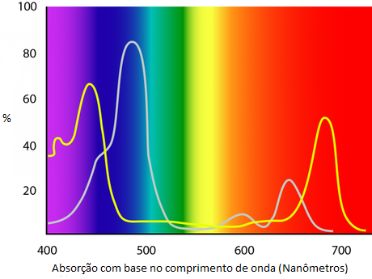

Comprimento de onda
Todas as precisam de uma incidência correta de luz para que seu processo de fotossíntese seja simulado corretamente sem a utilização do maior recurso natural para esse quesito, que é a luz do sol. Por isso, para que nosso sistema tenha sua efetividade 100% realizada, precisamos configurar com base na imagem abaixo, notando sempre em qual espctro a absorção é feita com maior aproveitamento.
Abaixo um pequeno demonstrativo dos espectros que podem ser configurados para utilizarmos nas plantas:
